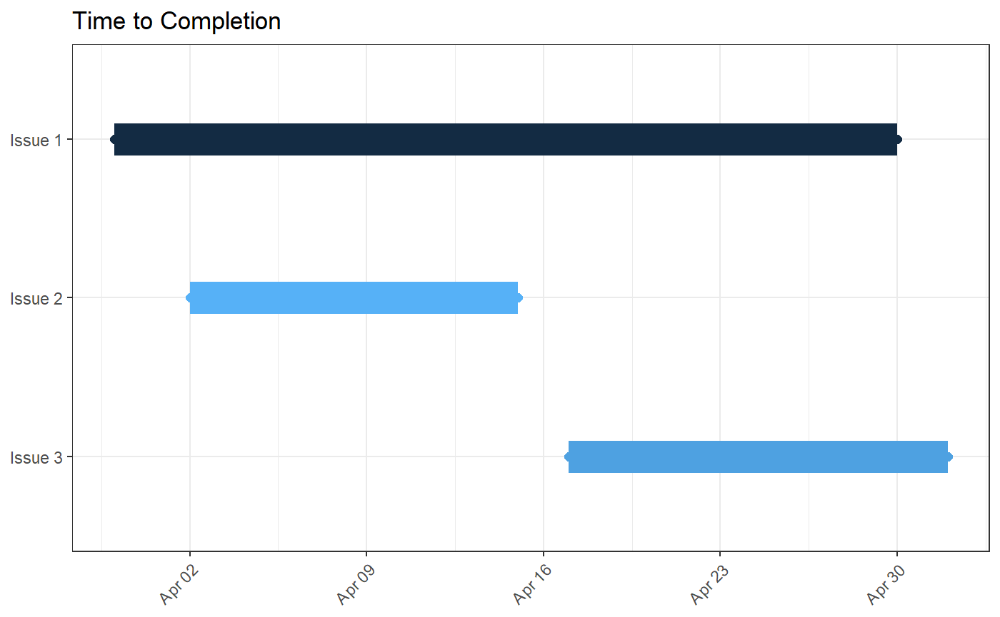
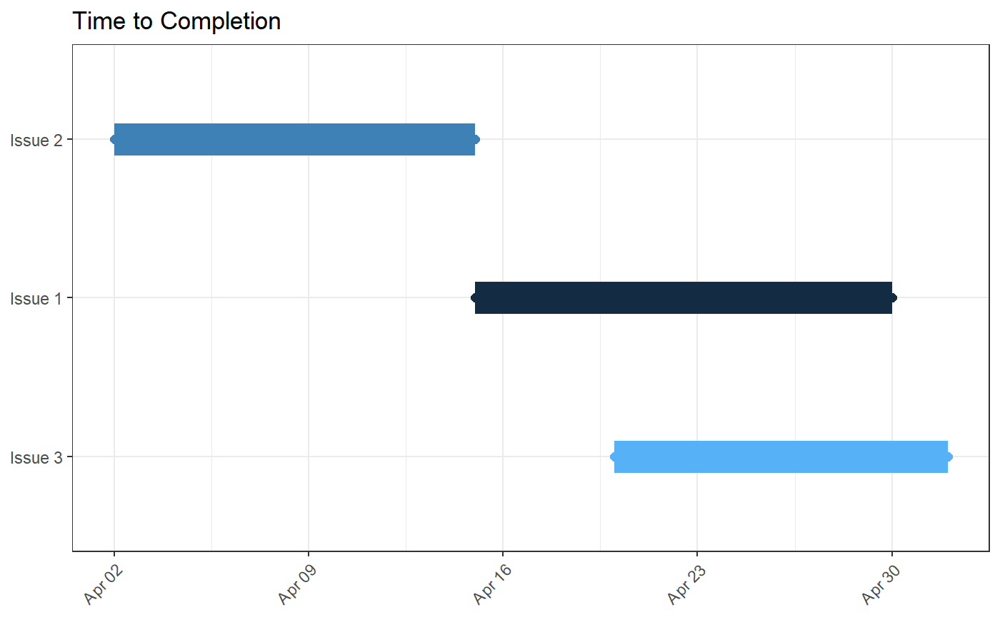

Events data, as returned by get_issue_events(), provides a granular view of issues in your GitHub repository. As opposed to the issue-level data returned by get_issues(), get_issue_events() provides timestamped event-level data for each issue, such as the addition and deletion of labels and milestones. See the Issue Events GitHub API documentation for a more comprehensive list.
This detailed information has many potential uses. One use in reporting and visualization is if if the created_at date for your issues does not have an intrinsic meaning and does not represent when work on an issue was started.
For example, let’s suppose we pull some issues from our repo and visualize their time-to-completion with viz_gantt().
my_repo <- create_repo_ref('emilyriederer', 'my_repo')
issues <- get_issues(experigit, state = 'closed', milestone = 1) %>% parse_issues()viz_gantt(issues)
Issue 1 stands out as having taken a very long time to complete. However, it’s possible it was created long before anyone started actively working on it. Instead, we might want to consider the start time to be, for example, when an issue was tagged with the “in-progress label”.
We can get events for a specific issue with the following code. Due to the potentially massive size of this data, the function returns events for a single issue at a time and, thus, has a required number parameter to specify the issue for which events should be returned. As such, to events for multiple issues, we need to use purrr::map().
Since events can also include adding assignees or milestones, we filter our dataset to 'labeled' events where the label_name is “in-progress”.
issue_events <-
purrr::map(1:3, ~get_issue_events(experigit, number = .)) %>%
purrr::map_df(parse_issue_events) %>%
dplyr::filter(event == 'labeled' & label_name == 'in-progress')The fields of the resulting dataframe are shown below. Note that in this dataset, the created_at field refers to when the event was created (i.e. when the issue was labelled in this case) and not when the issue was created.
head(issue_events)
#> number id actor_login event created_at label_name milestone_title
#> 1 1 123 emilyriederer labeled 2018-04-15 in-progress NA
#> 2 2 124 emilyriederer labeled 2018-04-02 in-progress NA
#> 3 3 125 emilyriederer labeled 2018-04-20 in-progress NA
#> assignee_login assigner_login
#> 1 NA NA
#> 2 NA NA
#> 3 NA NANext, we can join our datasets together. THe suffix parameter allows us to append _event to all the field names from the events data to distinguished between the issue and event created_at fields.
issue_with_events <- dplyr::inner_join(issues, issue_events, by = "number", suffix = c("", "_event"))Finally, we can use this new dataset to remake our plot by specifying the name of the new created_at_event variable as the appropriate issue start date, via the optional start parameter.
viz_gantt(issue_with_events, start = "created_at_event")